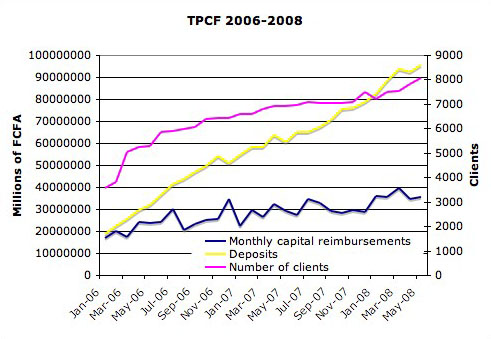

|
Investors
Sia N'Son's growth is limited by its lack of capital. That demand for loans exceeds their supply in a developing nation is not surprising and is indeed an exciting indicator of both current economic activity and future progress. In the past, the growth of Sia N'Son's capital has come entirely from sponsorships and its own activities. Today, Sia N'Son is an established institution, with over 12,000 current borrowers. Its wide range of services means the bank can cater to clients as they move from their first 20,000 CFA (44 USD) loan to a loan on a scale a hundred times that. Sia N'Son's team of loan officers is working to bring such services to villages in the most remote, as of yet commercially undiscovered, regions of Benin. It is this established track record and unique approach that make Sia N'Son an attractive opportunity for investors.
Two programs dominate Sia N'Son's credit provision activities. The Tout Petit CrÈdit Aux Femmes (TPCF or literally “small loans for women”) is a service that had outstanding credit to 7832 women and 230 men as of May 2008. The objective of this program is to raise small-scale business activity and began realizing the economic potential of the community. Since most would-be borrowers have neither a reliable credit history nor any collateral, the bank makes its loans not to individuals but to groups. Every group is treated as a single person: the whole group is responsible for the interest and capital payments of each of its members. This is a powerful security mechanism – TPCF loans have a default rate of 15.3% among first-time borrowers – and helps instill a sense of solidarity and teamwork among group members. Members of successful groups gain a feeling of achievement, often becoming role models in the community, and are encouraged to take repeated loans of larger denominations. It is prestigious to be part of a group past its first loan and new members are admitted only under much scrutiny. Sia N'Son has a near zero default rate among established TPCF borrowers.

Often in a developing economy it is the small, expanding businesses, ignored by the banks but desperately needing that extra capital, which are forgotten. Sia N'Son is working to address this issue. The Planète Finance program is not yet even a year old but has already proven very successful. What started as an experiment with 20,000 Euros has turned into thirty-four interest-paying clients, none of whom have defaulted. 15% of Planète Finance clients actually finished paying off their loan early and have taken out new loans. This is indicative of great potential in this area.
Sia N'Son is experiencing an exciting phase in its development. To take advantage of its position, Sia N'Son is in search of financial partners. Potential investors should be aware that Sia N'Son is a longer-term investment since micro-debt is not very liquid. It is an investment that will make a great difference in the region however and could be the beginning of a lucrative partnership as Benin's economy expands. Sia N'Son has much to offer to all of its partners. Please do not hesitate to contact us if you are interested in cooperating at any level.
|